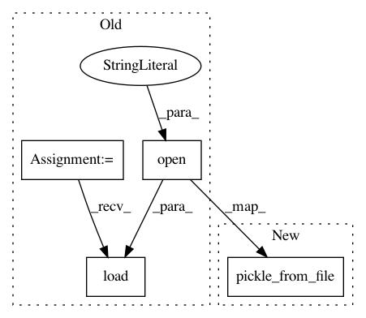

17e9e017a0ffc92148778686ab86d681a42085e3,autokeras/classifier.py,,run_searcher_once,#Any#Any#Any#Any#Any#,50
Before Change
def run_searcher_once(x_train, y_train, x_test, y_test, path):
searcher = pickle.load(open(os.path.join(path, "searcher"), "rb"))
searcher.search(x_train, y_train, x_test, y_test)
def read_csv_file(csv_file_path):
After Change
def run_searcher_once(x_train, y_train, x_test, y_test, path):
searcher = pickle_from_file(os.path.join(path, "searcher"))
searcher.search(x_train, y_train, x_test, y_test)
def read_csv_file(csv_file_path):
In pattern: SUPERPATTERN
Frequency: 6
Non-data size: 4
Instances
Project Name: keras-team/autokeras
Commit Name: 17e9e017a0ffc92148778686ab86d681a42085e3
Time: 2018-04-04
Author: jin@tamu.edu
File Name: autokeras/classifier.py
Class Name:
Method Name: run_searcher_once
Project Name: keras-team/autokeras
Commit Name: 17e9e017a0ffc92148778686ab86d681a42085e3
Time: 2018-04-04
Author: jin@tamu.edu
File Name: autokeras/classifier.py
Class Name: ClassifierBase
Method Name: __init__
Project Name: jhfjhfj1/autokeras
Commit Name: 17e9e017a0ffc92148778686ab86d681a42085e3
Time: 2018-04-04
Author: jin@tamu.edu
File Name: autokeras/classifier.py
Class Name: ClassifierBase
Method Name: load_searcher